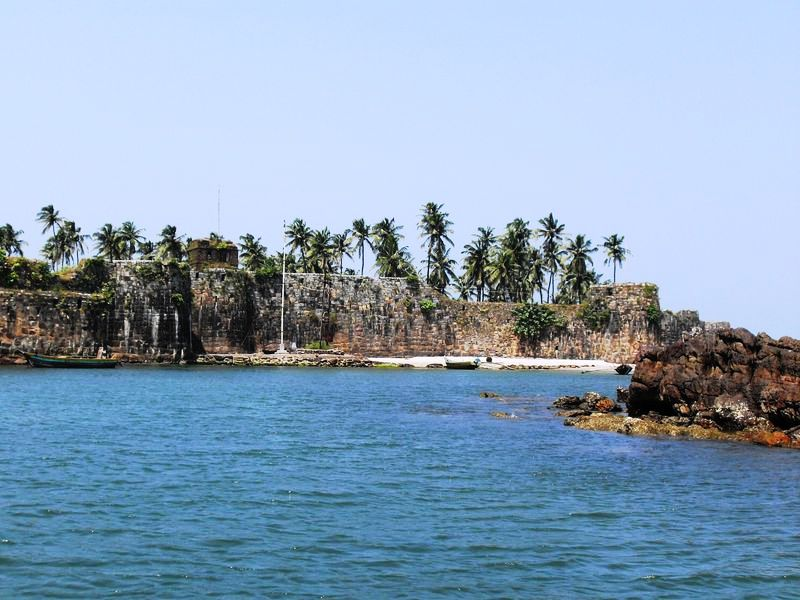

Sindhudurg Fort is a historical fort that occupies an islet in the Arabian Sea, just off the coast of Maharashtra in Western India. The fortress lies on the shore of Malvan town of Sindhudurg District in the Konkan region of Maharashtra, 450 kilometres (280 mi) south of Mumbai. It is a protected monument.
Devgad Fort - The name ‘Devgad’(or Devgarh) of the city and tehsil are derived from this historic fort lying at the confluence of Arabian Sea and Devgad creek. Kanoji Angre, chief of Martha admiralty, was instrumental in erecting this elegant looking fort in 1705. Devgad is a natural harbor and well guarded port town. Earlier big ships used to dock at the port jetty.
Vijaydurg (sometimes written as Viziadurg), the oldest fort on the Sindhudurg coast, was constructed during the regime of Raja Bhoja II of the Shilahar dynasty (construction period 1193-1205) and restructured by Shivaji Maharaj.Earlier, the fort encompassed an area of 5 acres (1 acre = 4840 square yards or 4047 square metres) and was surrounded by sea on all four sides. Over the years the eastern trench was reclaimed and a road constructed thereon. Presently the area of fort is about 17 acres and is surrounded by the Arabian Sea on three sides. Shivaji extended the area of the fort by constructing three walls on the eastern side, each 36 metres high. He also constructed 20 bastions.